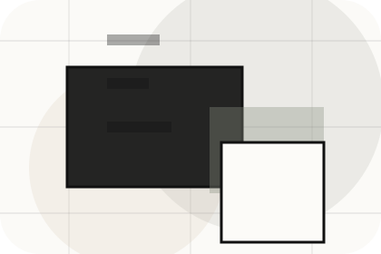
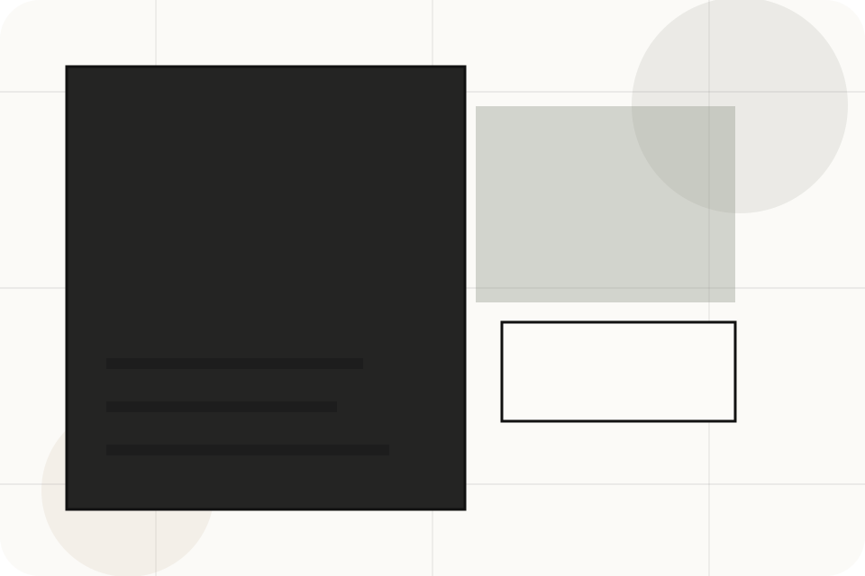
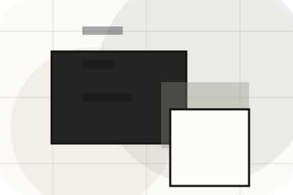
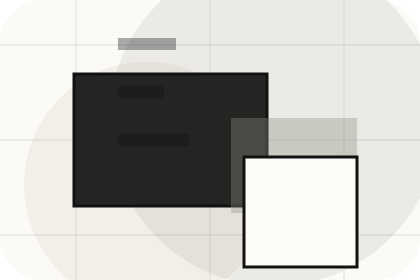
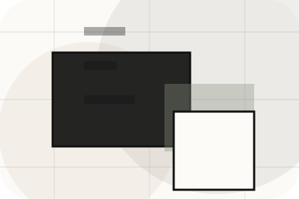
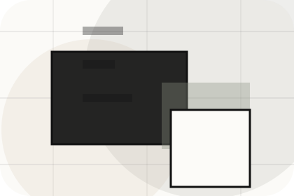
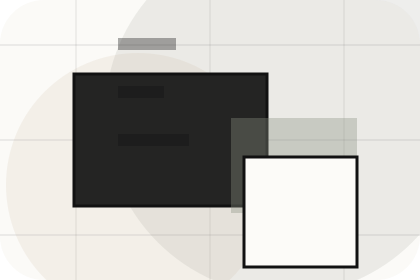
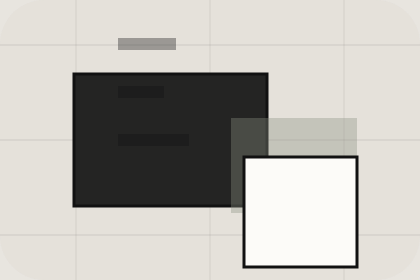

Role
The person, team, or specialist function connected to team is easy to understand.
Agency / 01
Agency opens as a clear real estate decision hub: what Urban offers, who it helps, why it matters, and which route to take first.
The first screen combines positioning, proof, primary action, and fast internal navigation, so people can act immediately or compare the rest of the agency route with context.
Architectural listing hero
Select the closest route and Urban keeps the next step, proof, and follow-up expectation aligned with market confidence and discovery.

Agency / 02
Market adds professional context to the agency route, using the minimal property journal structure to support market confidence and discovery before visitors choose a next step.
Urban uses thin-rule listing cards and focused copy to make the decision easier to scan, aligning the section with market confidence and discovery rather than filling space.
Explore AgencyUrban structures market around context, judgment, and a clear next route so visitors can compare the block quickly before they get a valuation.
Get ValuationAgency / 04
Values adds professional context to the agency route, using the minimal property journal structure to support market confidence and discovery before visitors choose a next step.
Urban uses thin-rule listing cards and focused copy to make the decision easier to scan, aligning the section with market confidence and discovery rather than filling space.
Explore AgencyValues gives the page a specific angle instead of repeating the navigation label.
The thin-rule listing cards show what to compare, what to avoid, and what matters most for real estate, property & land services visitors.

The final cue points to a useful internal route so the section keeps the journey moving.
Agency / 05
Reviews converts customer proof into a useful buying signal: the problem, the experience, and what changed afterward.
Proof stays believable by focusing on situation, service experience, and practical change rather than vague praise or unsupported results.
Explore AgencyWhat the visitor needed before choosing Urban, written with enough context to feel real.
How the service, product, or support felt during the process, not just that it was good.
What became easier to decide, complete, buy, book, or trust after the interaction.
Agency / 06
Standards gives the proof layer for agency: standards, evidence, and reassurance that make the next decision feel grounded.
Instead of relying on vague claims, Urban presents visible standards, process cues, and proof artifacts that help real estate visitors judge fit.
Explore AgencyVisible proof that helps visitors believe the claims behind standards.
The quality, safety, or operating expectation this section makes explicit.
What becomes clearer before someone decides whether to get a valuation.
Agency / 07
Local adds professional context to the agency route, using the minimal property journal structure to support market confidence and discovery before visitors choose a next step.
Urban uses thin-rule listing cards and focused copy to make the decision easier to scan, aligning the section with market confidence and discovery rather than filling space.
Explore AgencyUrban structures local around context, judgment, and a clear next route so visitors can compare the block quickly before they get a valuation.
Get ValuationAgency / 08
Experience adds professional context to the agency route, using the minimal property journal structure to support market confidence and discovery before visitors choose a next step.
Urban uses thin-rule listing cards and focused copy to make the decision easier to scan, aligning the section with market confidence and discovery rather than filling space.
Explore Agency

Experience gives the page a specific angle instead of repeating the navigation label.
Agency / 09
Trust gives the proof layer for agency: standards, evidence, and reassurance that make the next decision feel grounded.
Instead of relying on vague claims, Urban presents visible standards, process cues, and proof artifacts that help real estate visitors judge fit.
Explore AgencyVisible proof that helps visitors believe the claims behind trust.

The quality, safety, or operating expectation this section makes explicit.

What becomes clearer before someone decides whether to get a valuation.
Agency / 10
Urban closes the agency route with a clear action, a quick reminder of the value, and a low-friction way to get a valuation.
Visitors who are ready can use the primary action. Visitors who are still comparing can scan the section links, proof, and support routes before they get a valuation.
Get ValuationThe final block keeps the choice simple: act now, compare one more proof route, or send enough detail for a focused response.
Get Valuationmarket confidence and discovery
A real-estate editorial site with architecture-led listings, sparse navigation, area guides, and valuation flow. Agency ends with a direct path to get a valuation, plus enough context for visitors who still need to compare.

Get ValuationInformation is provided for planning and should be reviewed for the final client, location, and operating rules.